Driving Behavioral Change: Sociological Insights from Our NSS Waste Management Drive
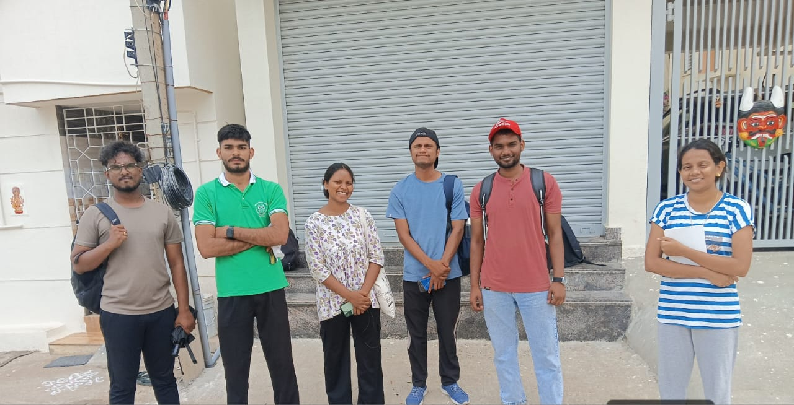
Our National Service Scheme (NSS) unit recently organized a comprehensive Waste Management Awareness Drive to promote waste segregation at the source. Through this initiative, I gained profound sociological insights into the real lives of clean-up workers and acquired practical learning outcomes through our extensive door-to-door surveys. We focused our field expeditions specifically on five villages: Ballur, Bidaraguppe, Billapura, Handenahalli, and Muguluru.
During our fieldwork, my primary objectives were to:
- Educate households, local shopkeepers, and institutions on systematically separating their waste into two distinct streams: wet (biodegradable) and dry (recyclable).
- Understand the severe socio-economic, occupational, and physical health challenges faced by our sanitation workers (swachhata karmikaru).
- Observe real-world social stratification and its direct impact on the environment.
The Burden of Unsegregated Waste & Informal Labour
One of the most critical educational outcomes of this NSS drive for me was studying the indignities experienced by refuse workers firsthand. Through direct field engagement and observation during their morning collection routes, I witnessed the harsh reality of contaminated refuse. When households fail to segregate waste at the source, refuse workers are forced to manually pick through rotting, liquid-contaminated garbage just to extract dry recyclables.
This manual sorting process significantly slows down collection routes, multiplies the workers' risk of cuts and bacterial infections, and ultimately strips these frontline workers of their fundamental human dignity. Furthermore, I observed how these sanitation workers often have to tolerate societal discrimination, low wages, and informal employment conditions with zero social safety nets or job guarantees.
Taking Action on Segregation
To rectify these household waste handling behaviors, we began our expeditions by emphasizing the absolute necessity of two-way waste segregation at the source, actively using visual posters to educate the community.
The Fundamentals of Segregation
To ensure our message was clear and actionable, we broke down the segregation process for the households we visited. We educated residents on exactly what goes into each bucket and the direct consequences of failing to separate them properly.
| Waste Category | Typical Examples | Destination | Impact of Failure |
|---|---|---|---|
|
Wet Waste (Biodegradable) |
Kitchen food scraps, fruit/vegetable peels, tea leaves, coffee grounds, garden clippings | Green Bucket | Rots dry recyclables; stinking spoiled waste ruins potential manure. |
|
Dry Waste (Recyclable) |
Old newspapers, cardboard boxes, plastic bottles, polythene bags, metal cans, glass jars | Blue Bucket | Contaminates recyclable plastic wrappers, making them unprocessable. |
Surveying the Landscape
Armed with this educational framework, we initiated our extensive field surveys. Our efforts spanned across five main villages: Ballur, Bidaraguppe, Billapura, Handenahalli, and Muguluru. To give you an idea of the scale and demographic diversity of our fieldwork, here is an overview of the regions we mapped out:
| Village Name | Gram Panchayat / Hobli | Total Households | Languages Spoken |
|---|---|---|---|
| Ballur | Ballur GP (Attibele Hobli) | ~11,400 | Kannada, Tamil, Hindi (migrants), English, Telugu |
| Bidaraguppe | Bidaraguppe GP (Attibele Hobli) | ~8,500 | Kannada, Telugu, English |
| Billapura | Billapura GP (Sarjapura Hobli) | ~6,500 | Kannada, Telugu, English |
| Handenahalli | Handenahalli GP (Sarjapura Hobli) | ~2,500 | Kannada, Telugu, English |
| Mugulur | Mugulur GP (Anekal Taluk) | ~6,100 | Kannada, English, Telugu, Hindi (rare) |
After consolidating the data from our extensive household coverage, we visualized our findings to understand the ground reality of waste management practices. The data immediately highlighted a stark contrast in community behavior, driven heavily by whether the region was primarily agrarian, commercial, or heavily populated by industrial migrants.
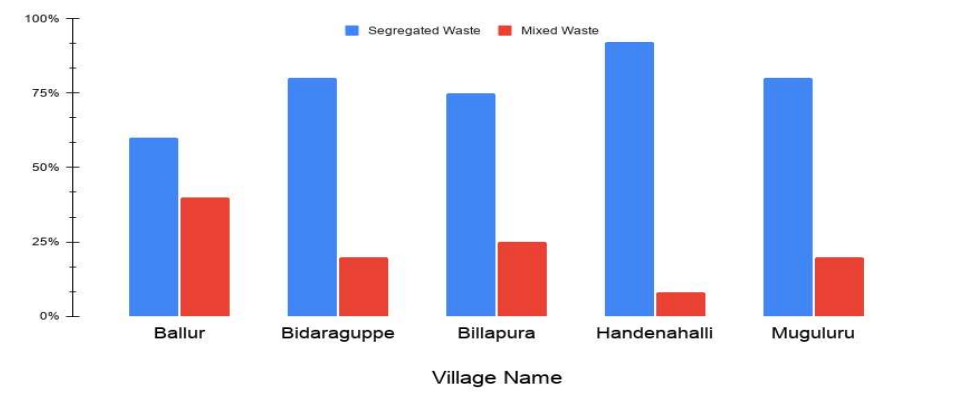
Village 1: Ballur - Industrial Migration and Multilingual Challenges
Our first major focus was the Ballur Gram Panchayat. Out of the approximately 14,000 households in this region, our team successfully surveyed nearly 12,500. Ballur presents a unique demographic challenge: while 70% of the residents speak Kannada as their primary language, there is a heavy presence of Telugu, Tamil, and Hindi speakers due to migrant industrial workers living in rented habitations.

To tackle this, our coordinators, Mr. Shiva Kumar and Mr. Vishwa, helped us form linguistic sub-teams. By pairing Kannada-speaking volunteers with those fluent in Tamil and Telugu, we effectively bridged the communication gap with the industrial migrants. This systematic mapping of the residential lanes ensured our data collection was thorough and culturally respectful.
Waste Handover Habits and Infrastructure Hazards
The ground reality of waste management in Ballur was concerning. We found that about 60% of households handed over unsegregated mixed waste packed into single carry bags. On the positive side, agricultural families naturally repurposed their vegetable scraps as cattle feed. While collected waste is typically handed over to the Dry Waste Collection Centre (DWCC), we observed that vacant plots near residential and industrial areas were frequently being exploited as open dumping spots.
The operational infrastructure also posed severe risks. The Gram Panchayat tractors were being run continuously without proper servicing. The trolley grills had degraded to the point where tiny waste particles were spilling out onto the streets during transit. Furthermore, the machinery was deafeningly loud—we actually had to urge the drivers to reduce the noise levels to protect the hearing and health of nearby infants and children. Most alarmingly, while the sanitation workers were provided with high rubber boots, they completely lacked respiratory masks, exposing them directly to the hazardous dust and fumes of the collection routes.
To better understand the scale of the challenge in Ballur, we visualized the household data collected during our door-to-door campaign. The breakdown clearly illustrates the behavioral split in this diverse, rapidly industrializing area.
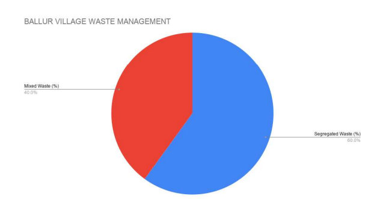
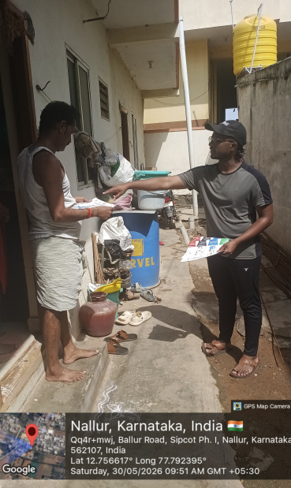
Concluding Thoughts on Ballur
Due to Ballur's proximity to the Attibele industrial corridor, we observed a mixed demography of traditional farming households and industrial migrants. While the community's willingness to learn is high, successful waste segregation here strictly requires multilingual educational campaigns. Furthermore, the local infrastructure must be upgraded—refusal vehicles need physical wet/dry partitions to maintain segregation during transit. Moving forward, distributing color-coded buckets from the Panchayat is essential, paired with continued awareness on how to properly use them.
Village 2: Bidaraguppe - Suburban Growth and Commercial Waste
Moving on to the Bidaraguppe Gram Panchayat, our team surveyed approximately 8,450 out of the 8,500 total households, extending our reach to include several roadside commercial eateries and tea stalls. The linguistic landscape here was predominantly Kannada (75%), with Telugu, Hindi, and English frequently spoken in the commercial hubs.
We were incredibly fortunate to have Mr. Lakshmanath R. as our coordinator. He is an exceptionally hardworking individual who barely took any time off during our drive. He stepped in to bridge language barriers whenever our native-speaking volunteers were unavailable and took the time to thoroughly explain the workings of their Dry Waste Collection Centre (DWCC) to us.
A Contrast in Habits and Hazardous Conditions
The waste handover habits in Bidaraguppe presented a sharp contrast between residential and commercial areas. While household waste was moderately mixed, it was encouraging to see that 80% of households actively tried to provide separated waste. However, the commercial sector was a different story—we observed eateries dumping massive quantities of wet food waste directly into the open roadside drainage channels.
On the operational side, the Gram Panchayat used a tractor-trailer unit for bulk collection, smartly equipped with separate drums for wet and dry waste. Yet, the safety of the workers remained a glaring issue. The sanitation staff were provided with basic boots and cut-resistant gloves, but they were still working without any masks for breathing protection.
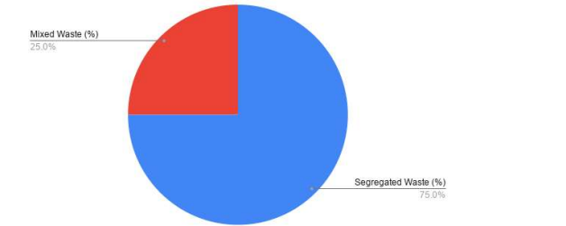
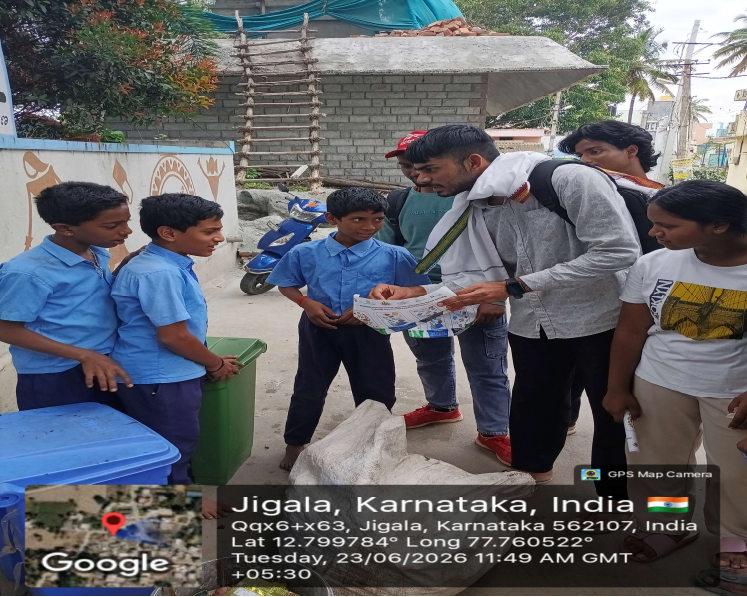
Concluding Thoughts on Bidaraguppe
Bidaraguppe's rapid suburban growth along the Sarjapur-Attibele road has resulted in significant commercial food waste. While I observed that households in residential layouts cooperate well and significantly give segregated waste, stricter management of roadside eateries and collection vehicles is urgently needed.
Village 3: Billapura - A Community on the Verge of Change
Our next stop was the Billapura Gram Panchayat. Our team of volunteers surveyed almost all of the 6,500 households, covering both traditional village dwellings and the adjacent semi-urban housing clusters. The primary language here was Kannada (80%), alongside Telugu, English, and Hindi.
We were supported by coordinators Mr. Suraj and Mr. Prakash. They not only provided essential vernacular translations in Kannada and Telugu but also took the lead in facilitating dialogue sessions between the village elders and our student volunteers. I observed that Mr. Suraj, in particular, took his role very seriously, ensuring our fieldwork was highly effective.
Positive Strides in Segregation and Safety
The waste management practices in Billapura were notably better. We found that 75% of households practiced active wet/dry separation. The community primarily handed their waste over to municipal collection vehicles, and we observed minimal open dumping compared to what we saw in Ballur.
Most importantly, the working conditions for the sanitation staff here were a vast improvement. The refuse workers were equipped with reflective jackets, cloth masks, and gloves. Furthermore, the municipal tractor used as a refusal vehicle was maintained in proper working condition, ensuring safer and more dignified operations for the frontline workers.
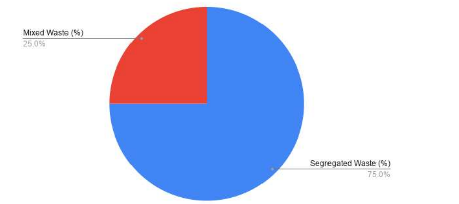
Concluding Thoughts on Billapura
Billapura truly felt like a community on the verge of positive change. While there is still room for improvement—as some waste that appeared separate was actually mixed upon closer inspection—introducing simple awareness campaigns, perhaps paired with minor penalties, could easily activate community-wide segregation practices here.
Village 4: Handenahalli - The Power of Agrarian Traditions
Our survey in Handenahalli covered all 2,500 households, mapping both the main village lanes and the adjacent agricultural borders. The linguistic makeup was primarily Kannada (75%), followed by Telugu (20%) and a small Hindi-speaking population (5%). We were once again guided by our coordinator, Mr. Shiva Kumar, whose strict enforcement of segregation protocols ensured that refuse workers rigidly refused mixed waste from households.
Natural Segregation and Operational Hurdles
Handenahalli stood out as a beacon of natural segregation. Barely 10% of households handed over unsegregated mixed waste. Because of the strong agrarian roots in this village, households frequently retained their wet kitchen waste naturally, using it to feed livestock or for backyard composting. The remaining dry and mixed waste was disposed of via the municipal collection tractor.
While the Gram Panchayat tractor was in moderate functional condition, we did note a behavioral challenge regarding worker safety. The refuse workers were equipped with basic footwear and reflective vests, and they actually had respiratory masks. However, many chose not to wear them due to complaints of suffocation while working.
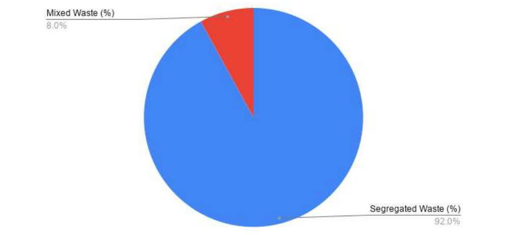
Concluding Thoughts on Handenahalli
Handenahalli exhibits a strong agrarian tradition where wet waste is naturally reused, resulting in the village giving almost completely separated waste to the collectors. However, while traveling back from the university, I did spot a blackspot in the vicinity of some tiny lakes indicating localized contamination that still needs to be addressed.
Village 5: Muguluru - High Segregation, Hidden Challenges
Our final major survey area was the Mugulur Gram Panchayat. We covered almost all of the 6,100 households across the main village and its newer layouts. The linguistic breakdown was predominantly Kannada (90%), with Telugu (20%) and a small minority of Hindi speakers (5%). Our coordinators, Mr. Lakshmanath R. and Mr. Suraj, were exceptionally strict on enforcing segregation protocols here.
Misuse of Resources and Severe Safety Lapses
Around 80% of households in Muguluru handed over segregated waste, with agrarian families retaining their wet kitchen waste for livestock or composting. We also observed occasional burning of dry leaves and paper packaging along the village outskirts. The Gram Panchayat supervised three TATA grilled-trolley mini pickup vehicles, which were in moderate functional condition.
However, the most alarming discovery in Muguluru was the severe lack of worker safety gear. The refuse workers were operating without basic footwear, reflective vests, and completely lacked respiratory masks. It was a stark reminder of the systemic occupational hazards these essential workers face daily.
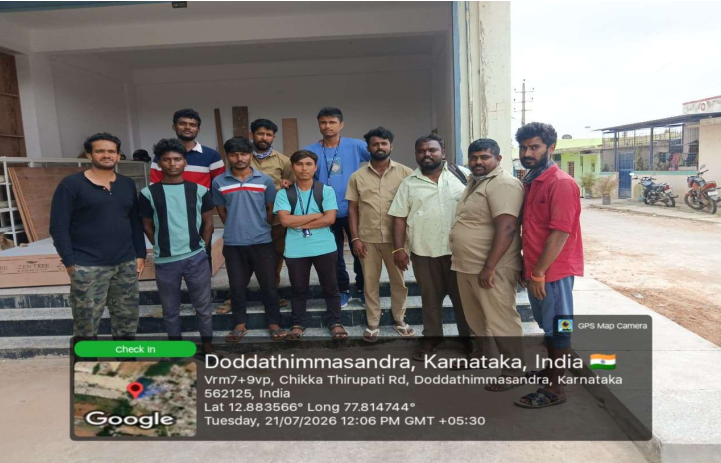
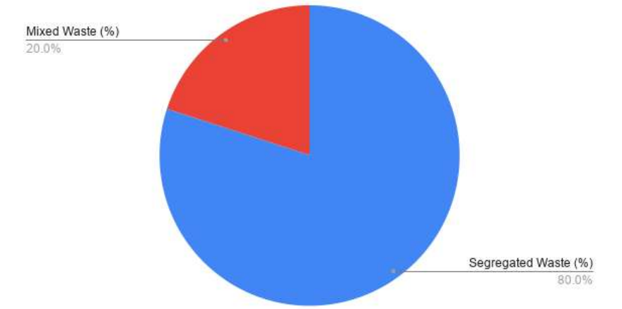
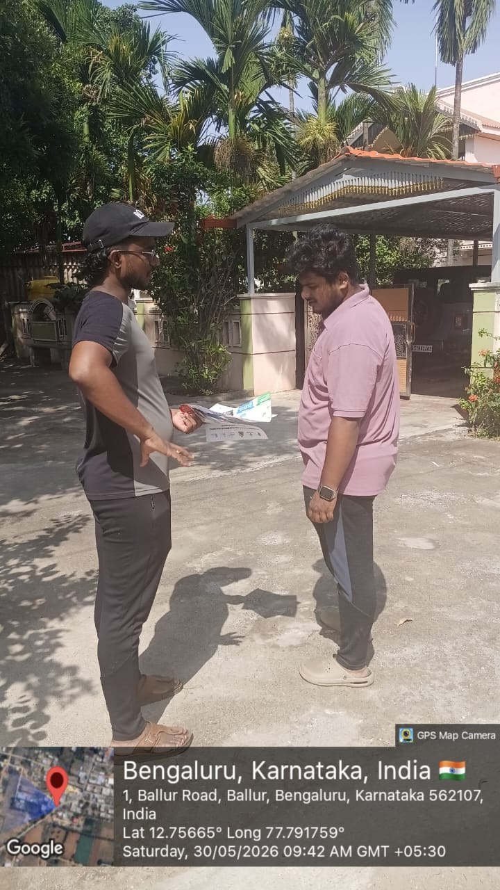
Concluding Thoughts on Muguluru and the Surveys
Mugulur, much like the other villages, highlighted the stark reality that while community willingness to segregate waste is often high, the infrastructure and administrative support—especially regarding the safety of the sanitation workers—must rapidly catch up to make these efforts sustainable.
For instance, we noticed residents using the separation buckets provided by the Panchayat for washing clothes instead of managing waste. This practice is detrimental to village health and is happening at a scale that cannot be ignored. It became incredibly clear to me that simply distributing resources is never enough; we need to make significant strides in behavioral education to stop these practices.
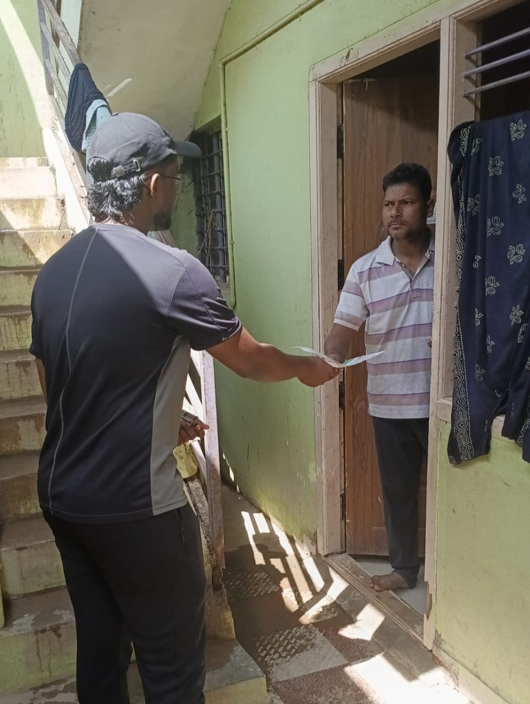
To address these deeply ingrained habits, our team took a highly personalized approach. We went door-to-door, handing out visual guides and having one-on-one conversations with residents right at their doorsteps.
While the local administration has made logistical investments—such as deploying three compact refusal vehicles sized perfectly to navigate Muguluru's narrow roads—infrastructure alone cannot solve the problem if residents are not participating. Bridging this behavioral gap became the core mission of our daily field interactions.
Beyond Waste: Our Green Plantation Drive
Our environmental advocacy extended beyond solid waste management. On the 5th of June, we shifted our focus to expanding the local green cover by organizing a comprehensive Green Plantation Drive.
Despite it being a rainy day with light drizzling, the turnout was fantastic. Many of the main Panchayati members attended and delivered valuable speeches emphasizing the crucial importance of a green environment and saving trees. All the NSS volunteers were present, actively assisting in both planting the new saplings and watering them. We also utilized this gathering to conduct a concurrent campaign, educating the attendees on the broader need to protect our local environment.
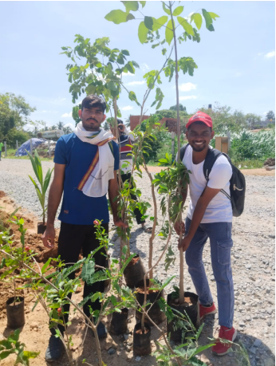
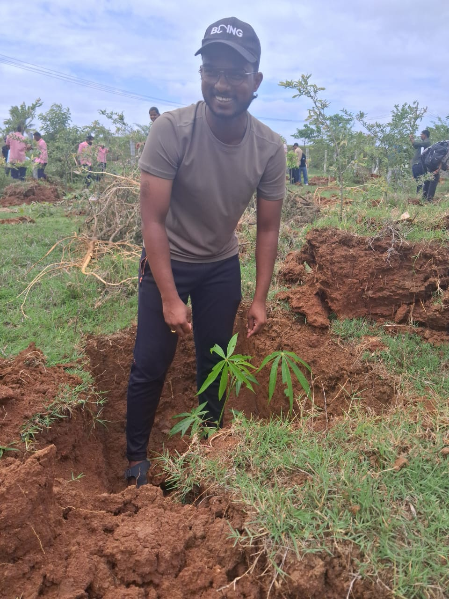
This hands-on work in the soil was a grounding experience for me and the entire team. It served as a powerful reminder that our environmental stewardship cannot be limited to just managing waste—it must also include actively restoring and nurturing the natural ecosystems around these expanding suburban and industrial villages.
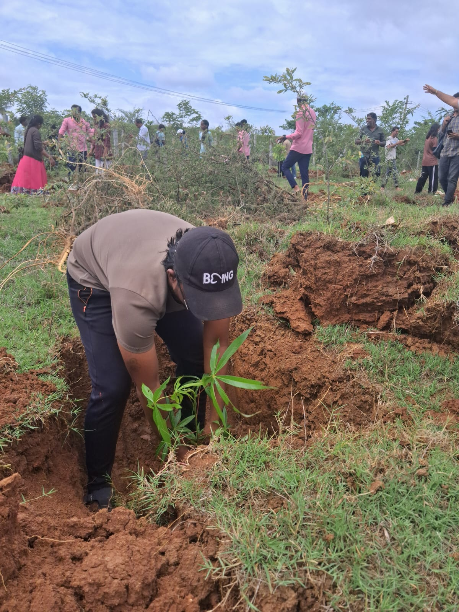
Working in tandem with the local residents and Panchayat members to dig these trenches fostered a deep sense of shared ownership. It wasn't just an NSS project anymore; it became a collective village initiative.
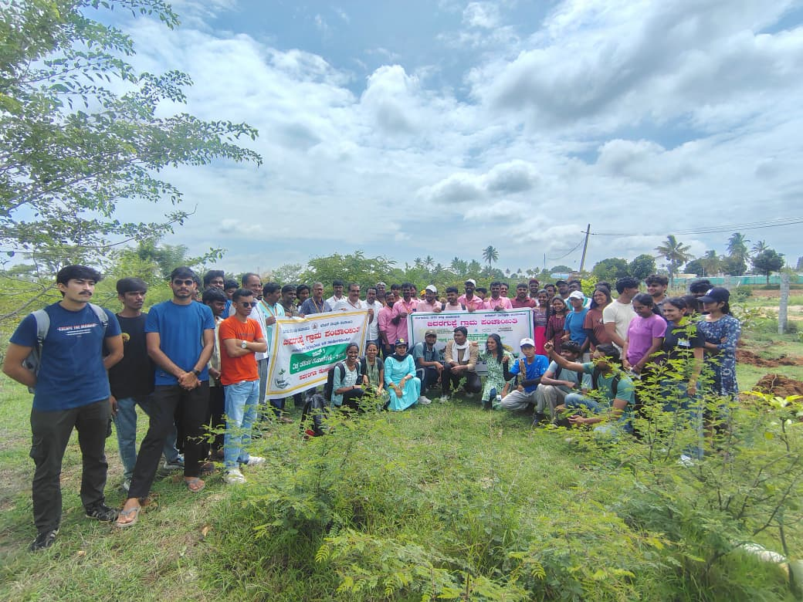
Conclusion: Designing Solutions with Empathy
By stepping outside the university campus and immersing myself in these five villages, I learned that environmental sustainability and social justice are deeply intertwined. No matter how many segregation buckets a Panchayat distributes, or how many refusal vehicles are deployed, clean villages ultimately depend on the dignity, safety, and empowerment of our frontline sanitation workers.
This fieldwork offered me a profoundly real-world perspective. It reinforced my belief that as we build structural or technological solutions—whether in waste management, social initiatives, or digital public goods—we must always pair them with deep behavioral empathy. True change does not just happen in systems; it happens in people.